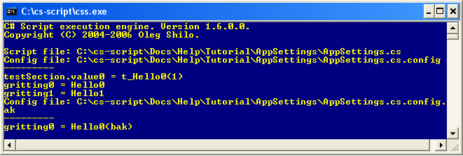

The following tutorial shows how to access script application settings stored in the <scriptName>.config or any other compatible configuration file.
create and execute the script that allows users to print any text string to the default printer with print preview. This is an example of multiple scripts application.
| using System; using System.Configuration; using System.Xml; using System.Collections; using System.Collections.Specialized; using CSScriptLibrary; using csscript; class Script { static public void Main(string[] args) { try { Console.WriteLine("Script file: " + CSSEnvironment.ScriptFile); Console.WriteLine("Config file: " + CSSEnvironment.ConfigFile); Console.WriteLine("---------"); IDictionary values = (IDictionary)CSSEnvironment.GetConfig("testSection"); Console.WriteLine("testSection.value0 = " + (string)values["value0"]); Console.WriteLine("greeting0 = " + CSSEnvironment.AppSettings["greeting0"]); NameValueCollection values1 = (NameValueCollection)CSSEnvironment.GetConfig("appSettings"); Console.WriteLine("greeting1 = " + values1["greeting1"]); CSSEnvironment.ConfigFile = CSSEnvironment.ConfigFile+".bak"; Console.WriteLine("Config file: " + CSSEnvironment.ConfigFile); Console.WriteLine("---------"); Console.WriteLine("greeting0 = " + CSSEnvironment.AppSettings["greeting0"]); } catch (Exception e) { Console.WriteLine(e); } } } |
| <?xml version="1.0" encoding="utf-8" ?> <configuration> <configSections> <section name="testSection" type="System.Configuration.SingleTagSectionHandler, System, Version=1.0.5000.0, Culture=neutral,PublicKeyToken=b77a5c561934e089"> < |
The script will produce the following output:

The code from this tutorial demonstrates the use of the CSSEnvironment class.
The first section of the application output contains names of the script file being executed and default script configuration file containing the application settings.
| ... Console.WriteLine("Script file: " + CSSEnvironment.ScriptFile); Console.WriteLine("Config file: " + CSSEnvironment.ConfigFile); ... |
| ... IDictionary values = (IDictionary)CSSEnvironment.GetConfig("testSection"); Console.WriteLine("testSection.value0 = " + (string)values["value0"]); Console.WriteLine("greeting0 = " + CSSEnvironment.AppSettings["greeting0"]); NameValueCollection values1 = (NameValueCollection)CSSEnvironment.GetConfig("appSettings"); Console.WriteLine("greeting1 = " + values1["greeting1"]); ... |
The third section of the output contains value of the greeting0 field from custom script configuration file. The code associated with this section also demonstrates how to instruct the CS-Script engine to use non-default (custom)script configuration file.
| ... CSSEnvironment.ConfigFile = CSSEnvironment.ConfigFile+".bak"; ... Console.WriteLine("greeting0 = " + CSSEnvironment.AppSettings["greeting0"]); ... |
CS-Script tutorials | CS-Script Runtume Environment | CS-Script application configuration